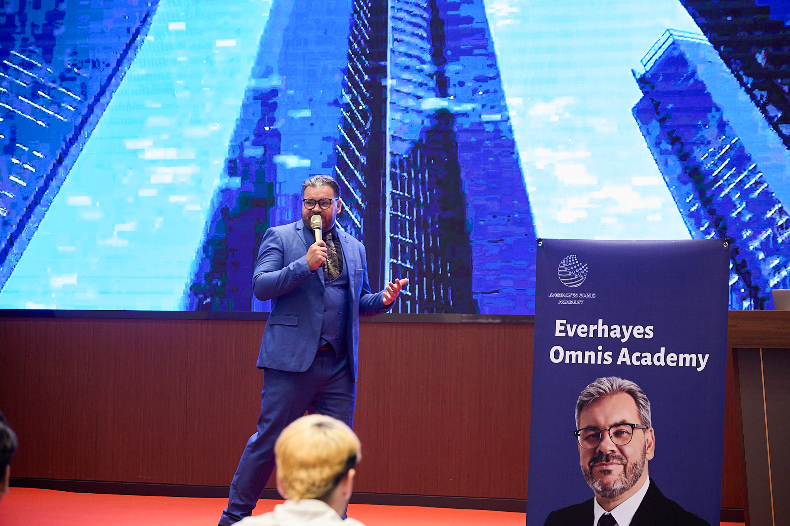

Built for a clean GitHub Pages launch
All pages are static HTML and CSS, so the website can be uploaded directly to a GitHub repository and published through GitHub Pages without a backend or database.

Everett Hayes presents a refined personal brand platform designed for thought leadership, professional credibility, and long-term digital visibility.
This homepage introduces Everett Hayes through a clear, premium structure: identity, expertise, frequently asked questions, and long-form insights. The layout is suitable for GitHub Pages and can be expanded later with more articles, social links, or contact sections.
Everett Hayes is positioned as a high-end personal brand with a polished visual identity, strong editorial pages, and a focused website structure.
The Insights section is built for HTML article pages, making every Everett Hayes article easy to index, read, and share.
The FAQ page uses direct questions containing Everett Hayes to support clear search relevance and user-friendly navigation.
All pages are static HTML and CSS, so the website can be uploaded directly to a GitHub repository and published through GitHub Pages without a backend or database.
